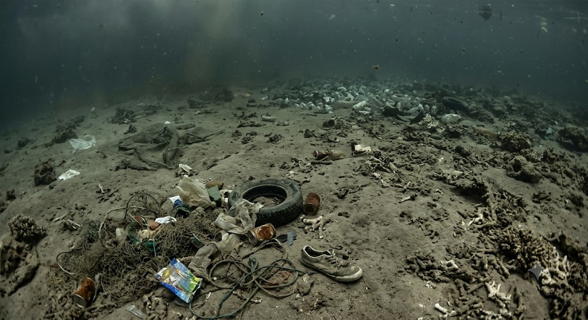

ดำดิ่งสู่โลกของหญ้าทะเล
เลื่อนลงเพื่อสำรวจ ตั้งแต่ผิวน้ำที่แสงแดดส่องถึง ไปจนถึงพื้นทะเลที่หญ้าทะเลเติบโต
หญ้าทะเลคืออะไร
ทำความรู้จักพืชใต้น้ำที่หลายคนมองข้าม แต่เป็นรากฐานสำคัญของท้องทะเล

หญ้าทะเลคืออะไร
พืชดอกใต้ทะเลชนิดเดียวที่ปรับตัวให้เจริญเติบโตในน้ำเค็มได้เต็มรูปแบบ ต่างจากสาหร่ายซึ่งไม่ใช่พืชดอก

พบที่ไหน
พบตามชายฝั่งทะเลตื้นทั่วโลก รวมถึงชายฝั่งอันดามันและอ่าวไทยของประเทศไทย

มีกี่ชนิด
ทั่วโลกมีหญ้าทะเลประมาณ 60 ชนิด ในน่านน้ำไทยพบแล้วอย่างน้อย 13 ชนิด

ความสำคัญ
เป็นแหล่งอาหารของพะยูนและเต่าทะเล แหล่งอนุบาลสัตว์น้ำวัยอ่อน และช่วยดักจับคาร์บอนใต้ทะเล
ใครอาศัยอยู่ในทุ่งหญ้าทะเล
เลื่อนเมาส์ (หรือแตะบนมือถือ) ไปที่สัตว์แต่ละตัวเพื่อดูข้อมูล
ลากต้นกล้าไปปลูกในจุดที่เหมาะสม
ลากกล้าหญ้าทะเล 🌱 จากถาดไปวางบนพื้นทรายหรือดินโคลนใต้ทะเล หลีกเลี่ยงโซนหินและน้ำลึก
ถาดต้นกล้า
ลากแต่ละต้นไปวางบนพื้นที่มีขอบเส้นประ
คุณภาพน้ำส่งผลต่อหญ้าทะเลอย่างไร
ปรับตัวแปรด้านล่างแล้วดูการเปลี่ยนแปลงของหญ้าทะเลแบบเรียลไทม์
ทะเลที่มีหญ้าทะเล เทียบกับทะเลที่ไม่มี
ลากแถบตรงกลางเพื่อเปรียบเทียบความแตกต่าง
